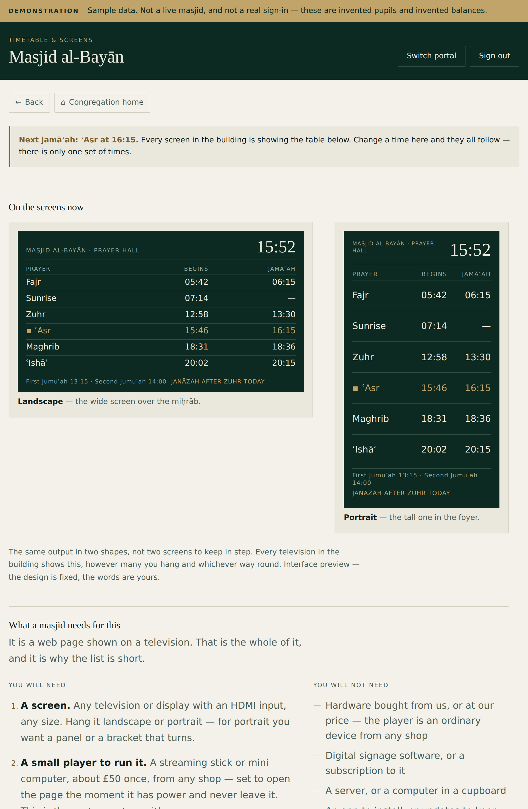
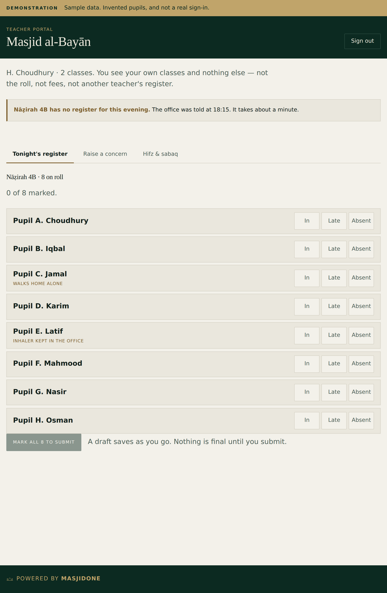
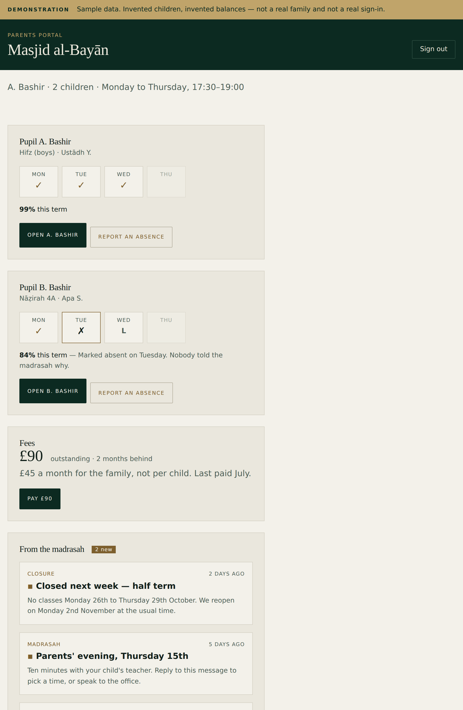

Masjid
One

One
The committee publishes
the timetable once.

Two
The teacher marks
tonight's register.

Three
The parent sees
their own child.
Nobody else joins the madrasah
to the congregation.
masjidone.co.uk
Request a demo